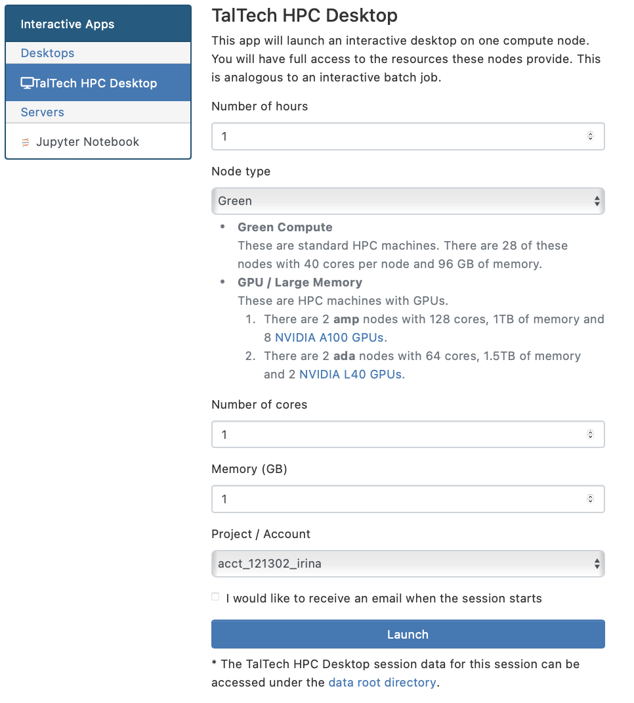
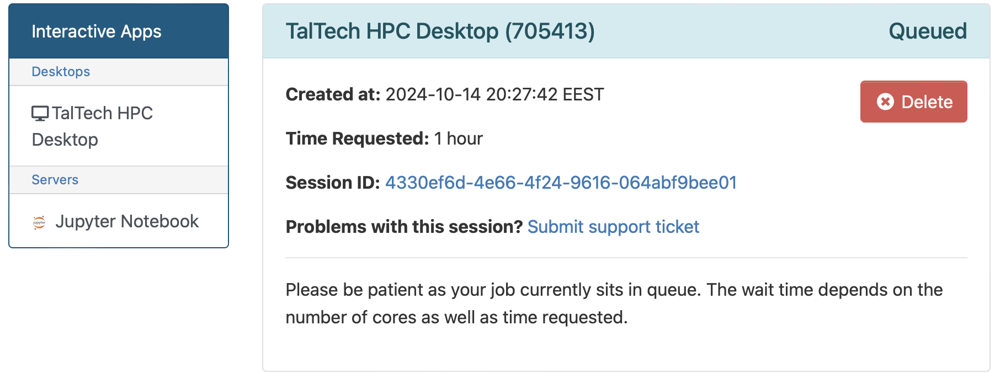
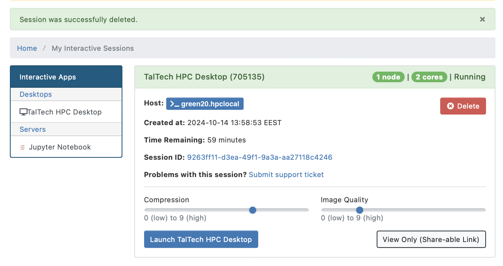

Visualization
The recommended way of doing visualizations is now using the desktop session on (ondemand.hpc.taltech.ee)[https://ondemand.hpc.taltech.ee].
OnDemand Desktop on any node (software rendering)
OnDemand is a graphical user interface that allows access to HPC via a web browser. Within the OnDemand environment users can access to a HPC files, submit jobs to a cluster, monitor jobs and HPS resources, run interactive applications like Jupyter.
The default desktop environment is xfce, which is configurable, lightweight and fast.

Running jobs
The menu only contain very few programs from the operating system. However, all installed software can be open an XTerminal using the module system as you would from the command-line. To do that
Choose TalTech HPC Desktop.
Set up and launch an interactive desktop (1 core and 1 GB of memory is usually enough if no calculations are planned).

NB! Check and your account.
Firstly, your request will be put into a queue and this picture will appear.

When needed resources will become available, your session will start and this picture will appear.
We recommend to use default settings for “Compression” and/or “Image Quality”, unless you require high-quality screenshots.

NB! Do not use quality settings “Compression 0” and/or “Image Quality 9”, this will cause a zlib error message. The message box can be removed by reloading the browser tab.

To start interactive desktop press “Launch TalTech HPC Desktop”
Available Visualization software on compute nodes
ParaView
VisIt
Py-MayaVi
RasMol
VESTA
VMD
Ovito
Ospray (raytracer)
PoVray (raytracer)
OnDemand Desktop on GPU nodes (hardware rendering)
Requires of course to be submitted to a GPU node and a GPU to be reserved. The nodes are configured in a way that requires EGL rendering, and therefore may require other modules to be loaded (e.g. ParaView).
Otherwise the Desktop works as the regular (software rendering) one, see above.
Please note that for most applications software rendering is fast enough, only heavy visulalization, like volume visualization in ParaView, COVISE, VisIt, VMD, Star-CCM+ and Ansys may require the GPU rendering.
Check using nvtop that your application actually uses the GPU!!!
ParaView with EGL acceleration
It is not possible to have EGL rendering and the OpenGL GUI compiled together, therefore the EGL accelerated pvserver and the OpenGL GUI come from different modules and can run on different compute nodes.
The startup procedure for EGL accelerated rendering is the same as for use of ParaView in distributed mode.
Start an OnDemand desktop on a GPU node and request a GPU
Open 2 XTerms
in Xterm 1:
module load rocky8-spack paraview/5.12.1-gcc-10.3.0-dotqand start the ParaView GUIparaviewin Xterm 2:
module load rocky8 paraview/5.12.1-egland start the ParaView serverpvserver(alternatively, you could ssh into base and start a separate job on a gpu node with srun or sbatch)in GUI select “Connect” and connect to either localhost:11111 or the gpu node the pvserver runs on, use “manual” connect, then choose “connect”.
A similar procedure can also be used to connect a client running on your desktop computer to the pvserver on the compute node.
For more explanations, see (ParaView WIKI)[https://www.paraview.org/Wiki/Reverse_connection_and_port_forwarding].
StarCCM+ with hardware rendering
vglrun starccm+ -clientldpreload /usr/lib64/libvglfaker.so -graphics native -rgpu auto -power -fabric TCP -podkey $YOURPODKEY ...
In-situ visualization (in preparation)
In-situ visualization creates the visualization during the simulation instead of during the postprocesssing phase. The simulation code needs to be connected to in-situ visualization libraries. e.g. Catalyst (ParaView), LibSim (VisIt) and Ascent.
The following are installed on our cluster
(Catalyst)[https://www.paraview.org/hpc-insitu/]
(Ascent)[https://github.com/Alpine-DAV/ascent]
LibSim
SENSEI
Ascent on all nodes
module load rocky8-spack
module load ascent
Catalyst on all nodes
module load rocky8-spack
module load libcatalyst/2.0.0-gcc-10.3.0-openblas-bp26
Catalyst can be used within OpenFOAM and (NEK5000)[https://github.com/KTH-Nek5000/InSituPackage] simulations.